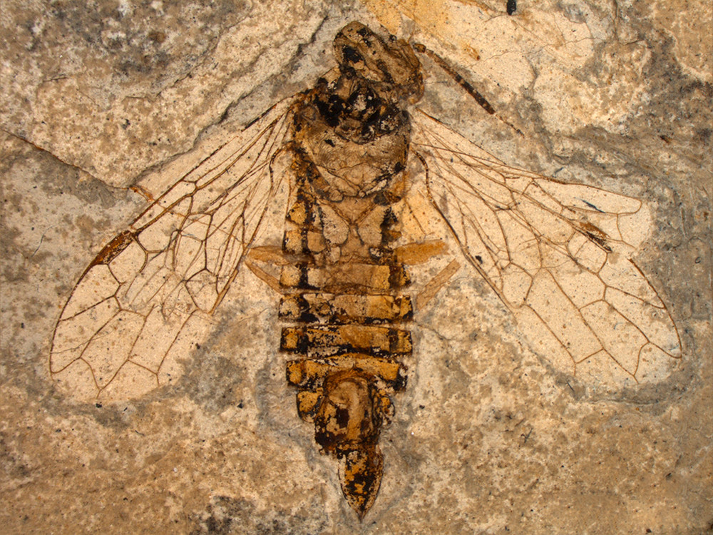

Комахи — клас членистоногих тварин з підтипу трахейнодихаючих. Найчисельніший і найрізноманітніший клас в усьому тваринному царстві. Комахи — поширені на всьому суходолі, включаючи Антарктиду, тварини довжиною від 0,2 мм до 64 см Тіло комах складається з трьох відділів (тагм) — голови, грудей і черевця, кожен з яких складається з сегментів (сегменти голови злиті) і вкритий хітинізованими покривами. На голові є пара членистих вусиків (антени), ротові придатки, органи зору. До грудей кріпляться 3 пари членистих ніг і 1—2 пари крил. На кінці черевця розташовані статеві і хвостові придатки (церки), іноді жало. Органи виділення — головним чином, мальпігієві судини. Кровоносна система незамкнена. Функцію серця виконує спинна судина, функцію крові — гемолімфа. Органи дихання — трахеї (у водних — зябро-трахеї), що відкриваються назовні дихальцями. Органи чуття дуже різноманітні, в основі будови багатьох з них лежать так звані сенсили, розкидані по різних частинах тіла поодиноко або зібрані у великі скупчення. Є органи зору — фасеткові очі та прості вічка, слуху — тимпанальний апарат, дотику — чуттєві волоски, нюху — ямки і волоски, рівноваги — хордотональний апарат і тд. і тп. Майже всі комахи роздільностатеві. Розвиток відбувається з (перетворенням), яке буває повним (коли личинка різко відрізняється від дорослої особини (імаго) і перетворюється на лялечку, з якої виходить доросла комаха), або неповним (личинка, що вийшла з яйця, має вигляд, близький до імаго, стадії лялечки нема).
Відомо 1-3 млн видів, поширених від Антарктиди до 84° північної широти. Більшість комах — наземні тварини, багато видів живе в землі, деякі в прісних водах, окремі — в морях. Більшість видів комах — фітофаги, є всеїдні (таргани), хижаки (поїдають інших комах, молюсків, червів тощо), копрофаги (гнойовики), кровосисні (комарі, воші, блохи).
Є багато видів, які мають позитивне чи негативне значення для людини. Деякі комахи приносять користь як запилювачі рослин; деякі виробляють речовини, які використовуються як харчові продукти та сировина для промисловості (мед, віск, шовк, природні фарби). Багато комах — шкідники сільського та лісового господарств, окремі — переносники паразитів та збудників хвороб людини, тварин або рослин, деякі самі є паразитами. також комахи відіграють важливе місце у житті планети і підтримують життя всшх живих організмів.
Ентомоло́гія — наука, що вивчає комах. Інколи це означення набуває ширшого змісту і охоплює також вивчення інших наземних членистоногих, як-от павукоподібні, прихованощелепні.
анатомія комах є унікальною. як і у всіх живих організмів вона поділяється на зовнішню і внутрішню:
Загальний план зовнішньої будови комах на прикладі травневого хруща. А — голова, В — груди, С — черевце.
1 — вусики, 2 — складне око, 3 — стегно, 4 — дві пари крил (у даному випадку друга пара знаходиться під першою), 5 — голінка, 6 — лапка, 7 — кігтик, 8 — ротовий апарат, 9 — передньогруди, 10 — середньогруди, 11 — задньогруди, 12 — стерніти черевця, 13 — пігідій.
Морфологія комахи
A — голова, B — груди, C — черевце.1. антена,2. вічко (нижнє),3. вічко (верхнє),4. складне око,5. мозок,6. передньогруди,7. дорсальна артерія,8. трахеї,9. средньогруди,10. задньогруди,11. переднє крило,12. заднє крило,13. середня кишка (шлунок),14. серце,15. яєчник,16. задня кишка (кишечник, пряма кишка і анальний отвір),17. анус,18. вагіна,19. абдомінальний ганглій,20. мальпігієві судини,21. подушечка,22. кігтики,23. лапка,24. голінка,25. стегно,26. вертлюг,27. передня кишка (стравохід, шлунок),28. грудний ганглій,29. тазик,30. слинна залоза,31. підглотковий ганглій,32. ротовий апарат

Комахи освоїли земну поверхню, ґрунт, повітря. Деякі види повторно заселили прісні водойми (клопи-водоміри, деякі їздці), меншість проникла в моря (деякі двокрилі)
еволюція комах Встановлення походження класу комах стикається з певними труднощами. Ключова проблема полягає у відсутності скам'янілостей, за якими можна було б встановити філогенетичні відносини комах.
Традиційно на основі морфологічних порівнянь (особливо трахеальних дихальних систем) найближчими родичами комах вважали багатоніжок. Згідно з цією точкою зору обидві групи об'єднували в таксон «неповновусі» (Atelocerata).
Однак побудова філогенезу на основі послідовностей генів і недавні морфологічні дослідження свідчать, що комахи ближчі до ракоподібних, ніж до багатоніжок. Прихильники цієї філогенетичної гіпотези об'єднали ракоподібних і комах в єдиний таксон Pancrustacea. Ця гіпотеза також не беззаперечна. Ракоподібні відомі з відкладень раннього кембрію (близько 511 млн років), у той час як комахи з'являються в палеонтологічному літописі тільки в ранньому девоні (близько 410 млн років). Таким чином, гіпотеза про походження ракоподібних і комах від єдиного спільного предка породжує часовий проміжок близько 100 млн років, протягом якого комахи повинні були існувати. Відсутність останків комах в палеонтологічному літописі протягом зазначеного періоду зазвичай пояснюється тим, що вони не збереглися до наших днів. Новітні морфологічні порівняння і філогенетичні реконструкції на основі геномних послідовностей вказують, що комахи є нащадками ракоподібних, а не сестринським таксоном. Це висновок добре узгоджується з палеонтологічними даними. Однак морфологічні та молекулярні дані не узгоджуються при визначенні найближчих родичів комах серед ракоподібних: морфологічні дані вказують на спорідненість комах з вищими ракоподібними, а молекулярні — з зяброногими. Відповідно до останньої гіпотези еволюційна гілка комах відокремилася від ракоподібних в пізньому силурі — ранньому девоні. Ця оцінка узгоджується і з палеонтологічними даними, і з оцінкою на основі молекулярного годинника.
цікаві факти про комах:
Найкоротша тривалість життя імаго серед комах у метелика Соленобія (Solenobia triquetrella) із родини Чохлоніски (Psychidae). Живе самка Соленобії всього кілька хвилин.
Тривалість життєвого циклу в 17-річної періодичної цикади Magicicada septendecim становить, як зрозуміло із назви, 17 років.
Серед гуртосімейних комах довгожителями є цариці мурах (Formicidae), що здатні прожити 15 — 20 років.
Деякі однопорі метелики з родини Prodoxidae здатні до 19 років знаходитися на стадії лялечки.
Тривалість життя деяких бліх, що паразитують на гризунах, може сягати 1725 діб, тобто 4,7 року.
Мадагаскарський тарган — черепашка (Gromphadorhina portentosa) здатний прожити понад 7 років.
Тривалість життя імаго жука-оленя Lucanus cervus становить кілька тижнів, тоді як його личинка живе 5 років.
крихітна цикада-пінниця є рекордсменкою зі стрибків у висоту. вона стрибає вгору на 70 см - це дорівнює якби людина стрибала на 200м вгору.
матка термітів в комфортних для неї умовах може прожити 50 років
богомолоподшбні — ряд комах надряду тарганоподібні з неповним перетворенням. Мають характерний вигляд: у спокійному стані тримають передні ноги зігнутими й спрямованими вперед, наче моляться, звідки й походить їхня назва. Забарвленням та формою тіла богомоли нагадують частини рослин. Усі богомоли є хижаками, які зазвичай полюють із засідки на дрібних комах та павукоподібних, хоча великі види можуть їсти й дрібних хребетних. Відомо близько 2400 видів богомолів[3] від дрібних до великого розміру комах із видовженим тілом, які переважно поширені в зонах тропічного та субтропічного клімату по всій Землі, окремі види живуть у помірній зоні.
Прямокрилі — ряд комах. Найвідоміші представники — коники, цвіркуни, сарана.
У світі відомо більше 27 000, а в Україні — дві сотні видів прямокрилих. Зустрічаються представники прямокрилих по всій земній кулі, в тому числі за полярним колом, у тропіках і в пустелях. Серед них багато екзотичних представників, бо група належить до древніх форм комах, разом з тарганами, богомолами тощо. Для цих комах характерно те, що голова причленована так, що дивиться в бік, а не вперед. Крил дві пари: передні більш жорсткі і використовуються як надкрила, задні більші, основний рушій в польоті, після посадки складаються як віяло і прикриваються передніми крилами. Характерні задні ноги стрибального типу, через які ці комахи мають додаткову назву — стрибаючі комахи
Твердокри́лі, або жуки́ — комахи з повним перетворенням, які у життєвому циклі проходять стадії яйця, личинки, лялечки та імаго. Свою назву — твердокрилі, жуки отримали у зв'язку із перетворенням передньої пари крил в хітинізовані тверді надкрила, які використовуються в польоті за принципом крила літака. Жуки — це одна із найбільших груп комах і живих істот взагалі — ряд нараховує понад 400000 видів. Нині прийнято вважати, що кожна п'ята тварина на Землі — це жук. Розміри коливаються в широких межах — від 0,3 мм у жуків-пір'єкрилок до 150 мм у Жука-Геркулеса чи 170 мм у Вусача-титана гігантського.
60 % всього різноманіття жуків складають представники лише п'яти родин: Жуки-слоники (Curculionidae) — 60 тис. видів, Жуки-хижаки (Staphylinidae) — 58 тис., Туруни (Carabidae) — 40 тис., Листоїди (Chrysomelidae) — 35 тис. та Вусачі (Cerambycidae) — 35 тис. 44 види твердокрилих занесено до Червоної книги України.
Двокрилі — один з найбільших рядів комах, який нараховує приблизно 240 000 видів комарів, мошок, мокреців, ґедзів, мух, оводів тощо, проте тільки близько половини з них (приблизно 120 000 видів) є описаними.[1]. Це одна з найважливіших груп комах, як у екологічному сенсі, так і в медичному та економічному значенні. Так двокрилі, зокрема комарі (Culicidae), є надзвичайно важливими переносниками малярії, гарячки Денге, гарячки Західного Нілу, жовтої гарячки, японського енцефаліту та інших інфекційних захворювань.
Личинки справжніх комарів (Culicidae) живуть у прісних водоймах і є кормом риб та земноводних. Дорослі комарі живляться нектаром квітів і є запилювачами, проте самиці для формування яєць потребують додаткового білкового живлення і використовують для цього кров наземних тварин.
Мошки (Simuliidae) — кровосисні довговусі двокрилі комахи невеликих розмірів, личинки яких розвиваються у водоймах з швидкою течією
В деяких районах України і в Криму поширені мокреці (Ceratopogonidae) та москіти (Phlebotomidae) — дуже дрібні комахи, личинки яких розвиваються у вологому ґрунті, нірках гризунів. Вони відомі як переносники багатьох хвороб — зокрема Крим-Конго геморагічної гарячки, гарячки паппатачі.
Серед коротковусих двокрилих відомі хатня муха та інші сірі, зелені та сині мухи, червоподібні личинки яких розвиваються у смітниках, покидах тощо. Відомо, що ці мухи механічно поширюють збудників шигельозу, черевного тифу, туберкульозу, поліомієліту, яйця гострика, аскариди та інших гельмінтів. Відома африканська муха цеце завдяки своїм укусам людей і тварин поширює збудників гамбійського та родезійського трипаносомозу.
Лускокри́лі, або метелики, молі — ряд комах з повним метаморфозом. Виник, вірогідно, у середині мезозою, викопні рештки надійних представників ряду відомі з юрського періоду. Найбільш характерна особливість комах, які належать до цього ряду — це наявність густого покриву хітинових лусочок (сплощених волосків) на крилах (при цьому лусочки розташовані як на жилках, так і на криловій пластинці між ними). Для більшості видів має спеціалізований сисний ротовий апарат з хоботком, утвореним подовженими лопатями нижньої щелепи.
Розвиток з повним перетворенням: є стадії яйця, личинки (званої гусеницею), лялечки та імаго. Личинка червоподібна, характеризується недорозвиненими черевними ногами, потужно склеротізованними покривами голови, гризучим ротовим апаратом і парними залозами, виділення з яких, при контакті з повітрям, утворюють шовкову нитку.
Надзвичайна різноманітність форм метеликів є їхньою вражаючою особливістю. Лускокрилі — один із рядів комах, найчисленніших за кількістю видів. Представники ряду поширені на всіх континентах, за винятком Антарктиди. 55 видів лускокрилих занесено до Червоної книги України.

Тарганоподібні (Dictyoptera) — надряд крилатих комах, до якого відносять сучасних тарганів, термітів, богомолів. Тарганоподібні ззовні і способом життя не схожі між собою, але походять від спільних предків, які існували на Землі понад 300 млн років тому. З представників цього надряду найпримітивніші — таргани, вони зберегли найбільш древні риси будови, і спосіб їхнього життя близький до того, який вели їхні предки. Богомоли і терміти — спеціалізовані групи, які під впливом особливого способу життя надбали багато специфічних ознак. Надряд включає понад 10000 сучасних видів.
Опис:
Комахи з неповним перетворенням. Великі або середні комахи. Є дві пари крил. Передня пара шкірясті і утримується плоско над тілом в стані спокою. Вусики довгі, і можуть бути більшими за довжину тіла.
Церки відкриті. Щетинки на церках дуже чутливі до руху повітря і є органами відчуття.

Клопи (Heteroptera) - це підряд комах ряду Напівтвердокрилі. "Heteroptera", з грецької означає "різні крила": більшість видів мають передні крила з обох мембран і твердої частини (званої hemelytra ); у членів примітивних Enicocephalomorpha є крила, які повністю перетинчасті. Група об'єднує близько 40000 видів
Назва "Heteroptera" використовується в двох дуже різних способах сучасної класифікації. В номенклатурі Ліннея вона зазвичай позначає підряд в ряді Hemiptera, де може бути парафілетичною або монофілетичною в залежності від її делімітації. Gerromorpha і Nepomorpha містять велику частину водних і навколоводних членів Heteroptera, в той час як майже всі інші групи є досить поширеними на суші.
Довжина тіла від 1 мм до 12 см. Крил 2 пари, що в стані спокою складаються плоско; осн. частина твердих крил (напівнадкрил) тверда, шкіряста, вершина — перетинчаста з характерним жилкуванням; задні крила — перетинчасті. Ротові органи у вигляді членистого хобітка, колючо-сисні. Передньоспинка сильно розвинена. На задньогрудях у дорослих клопів є пахучі залози. Понад 25 тис. видів (53 роди), поширені на всіх материках і океанічних островах. В Україні — бл. 1000. Наземні та водні комахи, живляться клітинним соком рослин, є хижаки й кровососи.
Розвиток з неповним перетворенням. Яйця відкладають на рослини або інший субстрат. Здебільшого дають 1 потомство на рік.

Примарові (Phasmatodea, також відомі як Phasmida або Phasmatoptera) — ряд комах, що складається з двох груп паличників та листотілів.
Паличники мають видовжене тіло до 35 сантиметрів завдовжки, тонке (паличники) або сплющене і листоподібне (листотіли). Голова маленька, куляста. Вусики короткі, щетинкоподібні або довгі, ниткоподібні. Ротовий апарат гризучий. Ноги ходильні. Передні крила (надкрила) тверді, короткі, задні — віялоподібно складаються вздовж черевця; часто крила відсутні. Завдяки маскувальному забарвленню (зелене, буре), формі тіла та здатності впадати надовго в стан нерухомості примарові малопомітні на листках і гілках рослин. Розвиток з неповним перетворенням. Рослиноїдні, деякі з них — шкідники культурних рослин, наприклад грефея кокосова (Graeffea coccophaga) об'їдає листки кокосових пальм. Ряд об'єднує 7 родин з 2500 видами, поширеними переважно у тропіках і субтропіках. В Україні не зустрічаються.
Вагомий внесок у вивчення цього ряду комах зробив Г.Я. Бей-Бієнко.
Вовчок звичайний, або Капустянка, Ведмедка (Gryllotalpa gryllotalpa L.) — комаха з родини Gryllotalpidae ряду Прямокрилі. В Україні поширена повсюдно. Тіло завдовжки 35-50 мм. Забарвлення коричневе, з шовковим відтінком. Передні ноги копальні, розширені, з зубцями. Третя пара ніг стрибальна. Крила розвинені, прозорі, з густою сіткою жилок. Яйця за розмірами та формою нагадують просяне зерно діаметром 3-5 мм. Личинки імагоподібні. У пронімф (личинок четвертого віку) з’являються зачатки крил. Ротові органи гризучого типу.
Dynastinae, або жуки-носороги — підродина (іноді виокремлюють у родину) пластинчатовусих жуків. Підродина об'єднує понад 1800 видів комах від дрібного до дуже великого розміру. Ці жуки поширені по всьому світі, окрім північних регіонів Євразії та Північної Америки. великі жуки особливістью яких є вертикальні вирости на голові(у деяких може бути всього 1 а в іньших 2,3,4 і тд), але ці вирости це особливість самців самки навпаки непримітні, не мають виростів на голові і меньші за самців в 2,3 рази.